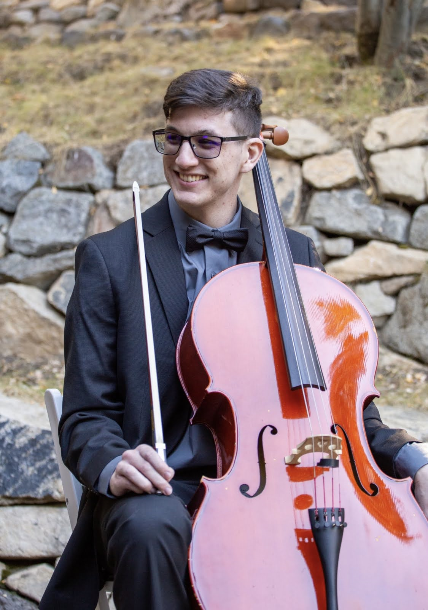

"Creativity is an energy. It's a precious energy, and it's something to be protected. A lot of people take for granted that they're a creative person, but I know from experience, feeling it in myself, it is a magic; it is an energy. And it can't be taken for granted." --Ava DuVernay
Every person is a story, and storyteller Cass Unterholzner is no different. He has been telling stories when he was younger. He pursued and is pursuing his creative cravings through short films, acting and playing music in musical theatre, developing and critiquing video games, and writing and recording music.
Even before entering high school, Cass participated in the a "Go Film!" workshop at the San Joaquin County Office of Education in Stockton, California learning about camera, lighting, and sound techniques. He worked with other teens to create and release a short film, as the Gaffer, the Foley Artist, and a Sound Editor. In high school, Cass took a class expanding his film knowledge in creating the school's announcements. After graduating, he started a YouTube channel where he posted short videos.
Along with working in film, Cass also participated in musical theatre. He appeared in many productions starting in 2007 with "Dear Edwina Jr" at Stockton Civic Theatre as well as many church musicals. In 2009, Cass starred in "The Music Man" for a senior project in Manteca, California. Later, he was cast as Professor Quirrel and was set to be the Musical Director for a production of "A Very Potter Musical" while directing and developing a Murder Mystery Dinner containing mostly improvised scenes.
Cass has always been interested in video game development and design as he played them often throughout his adolescence. This interest flourished and inspired him to major in Computer Science, first at San Joaquin Delta College and then University of the Pacific. He ended up switching his major to Media X to further pursue his passions. During his coursework, he worked with classmates to develop two games: a combat simulator for the tabletop role-playing game Dungeons and Dragons and a bullet-dodging game like the video game Cuphead. Cass intends to continue using video games as an alternate form of storytelling in the future.
Music has always been part of Cass's life. Inspired by his older sister taking lessons, he decided to learn piano at age 5. He later picked up more instruments such as the clarinet, the cello, and the guitar. Cass was active in his high school's band program where he took to arranging and writing for his school's wind ensemble and jazz band. He also played cello often in college and assisted East Union High School's theatre class in a production of "Next to Normal." In 2019, Cass sent a video of him playing an original song to the University of the Pacific’s student association. This resulted in Cass playing both original and cover songs at their Brickyard Series concert. Cass now writes indie pop music in his spare time.
Cass hopes to further his storytelling career using his YouTube channel talking about gaming, music, and languages. His free time consists of learning German, American Sign Language, Spanish, and Italian. When he's not crafting fantasy novels, Cass plays and runs sessions of various tabletop role-playing games for which he hopes to develop a podcast in the future.